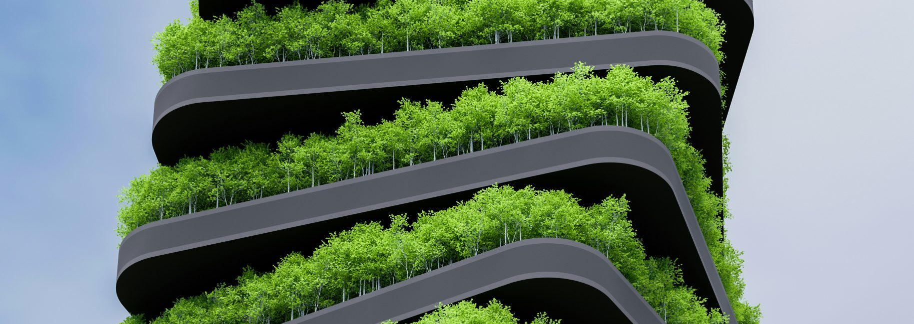
MOTIVATION FOR ORGANIZING
當前台灣製造業面臨的三大隱形轉折點：接單門檻、營運安全與少子化競爭。
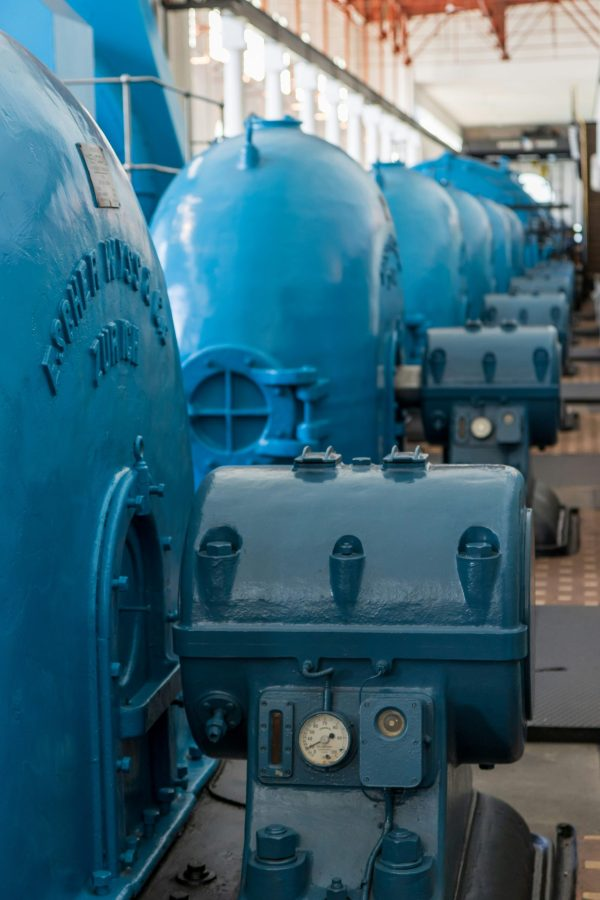
在過去，ESG 似乎是大企業的事，跟中小製造業沒關係。
但現今已截然不同——客戶開始要求供應商填寫 ESG 問卷，政府標案設立評鑑門檻，甚至連銀行融資貸款都將企業 ESG 列入關鍵審核項目。
我們並非鼓勵企業投入龐大預算去盲目追求各類認證，而是如今，你的廠房環境、員工健康福祉、建材安全與工作場域品質，已經悄悄變成接單條件的一部分。
大部分工廠的設備、空間與系統，已經使用了十幾二十年以上。礙於營運成本考量，只要沒有壞，就不換。
但設施老化並非一朝一夕的問題——網路架構過時、電話系統斷線、監控畫面模糊、消防設施不合規，這些問題平常感覺不出來，出事的時候才發現。
當重要客戶來訪時，它可能讓企業形象大扣分；當系統斷線出狀況時，它可能讓全廠營運中斷；當法規消防檢查來臨時，它可能變成必須立刻限期處理的鉅額代價。從形象扣分到停工風險，往往只差一瞬間。
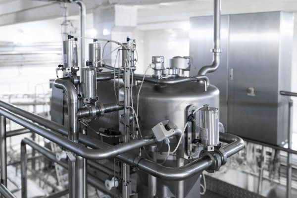
現在要找年輕人進廠，比以前難太多了。
很多製造企業薪水給得不差，福利也不差，卻還是招不到人、留不住人。原因有時候真的不是待遇，而是人才一走進廠房的第一眼，就已經在心裡做出了去留判斷。
廠房乾淨、明亮、具備現代化動線規劃，員工會直觀感覺這家公司是認真經營、有制度、有未來感的。相反地，昏暗雜亂、設備老舊的空間，會讓求職者卻步。在少子化時代，工作環境已經不只是門面，更是企業招募留才的核心競爭力。
TEAM INTRODUCTION
集結管理顧問、空間規劃設計、弱電資訊系統與醫療級健康建材專家，聯手為企業打通升級環節。
問大師家族辦公室執行長 ｜ ESG 永續長
超過十年的企業主服務經驗，現任問大師家族辦公室創辦人兼執行長，具備人壽保險與信託規劃雙重專業背景，為 MDRT 會員並持有 ESG 永續長證書。擅長整合法律、財務、補助與資源網絡，是企業主的第一個諮詢窗口。
20年資深資歷 ｜ 台北 101 展場操刀者
擁有二十年室內設計與空間規劃資歷，作品橫跨商業展場、企業辦公空間與工業廠房場域。代表作包含台北 101 觀景台展場、裕隆汽車裕苗山丘復育基地、勤美鑄鐵廠等，擅長兼顧動線效率、使用彈性與視覺品牌形象。
科技管理博士 ｜ 20+年弱電安防專精
科技管理博士，專注於弱電與資訊系統整合建置，服務涵蓋網路電話（VoIP）、門禁監控、緊急通報、多廠區 VPN 串接與集中管理架構。曾承接日商 NTT DATA 約 600 門網路電話及體育園區無線監控案。
鉅成地板創辦人 ｜ 15年實體廠管經驗
深知製造業場域對建材耐用度與安全性的高標準，帶領團隊打造出全台首款榮獲「日本 SIAA 抗病毒抗菌雙認證」地板，整合除甲醛、去除 TVOC 技術，符合國際 IAQ 標準，將醫療級防護帶入工廠與企業。
CASE SHARING
從科技大廠、上市製造業龍頭、日商到公共設施，用實績佐證一站整合與落地的真功夫。
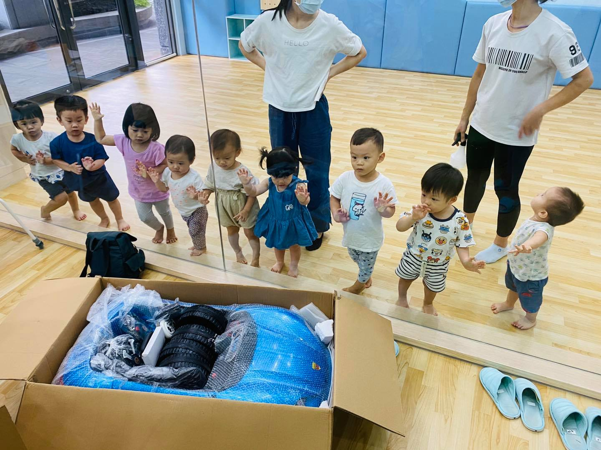
日本富士電視台專訪2 個月內完成國際接待級工廠形象升級
因應海外廠長重要審查，從勘驗到接待不到兩個月。團隊直接跨領域串接環安、鑄造、加工、品技等部門，盤點素材並規劃參觀動線，建置超薄燈箱、大型裝修看板與數位電視牆，完美呈現國際接待水準。
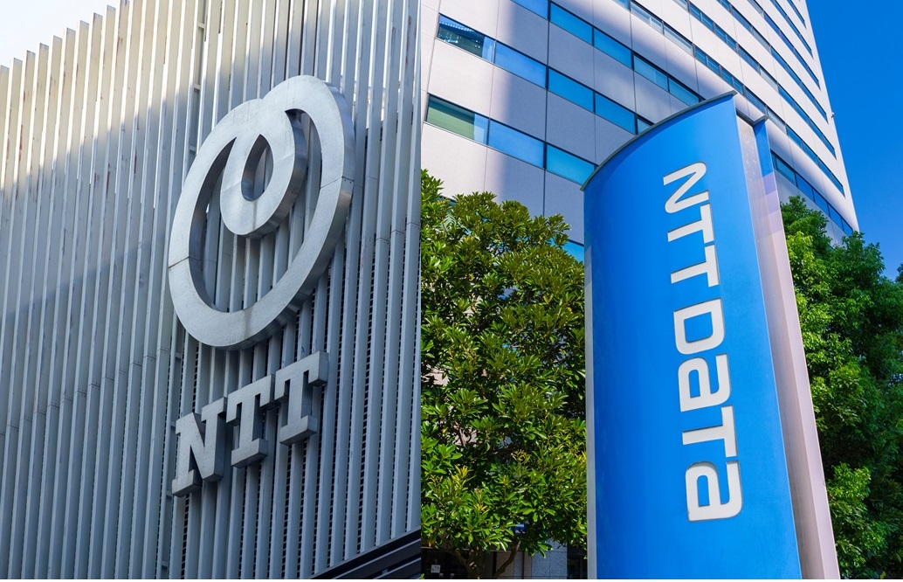
三組競標半價勝出55 坪整合歷史展示、培訓與股東大會
需同時承載歷史沿革、產品、ESG展示、教育訓練與股東會功能。建多室廣發揮「視覺 × 空間建置整合」優勢，導入 KT 抗病毒地板與超短焦雷射投影，以競標對手約半價的預算完美平衡落地。
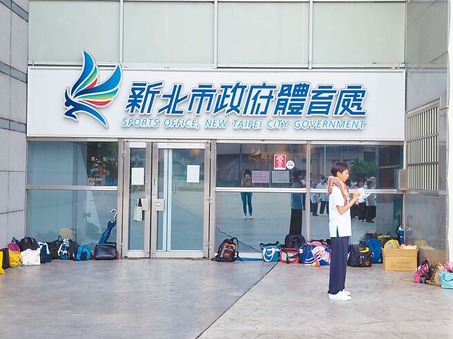
ESG 生態教育示範地閒置高爾夫球場化身原生林復育基地
參與裕隆汽車品牌識別 LOGO 繪製、環境整建與現場展示動線建置，將疫情後閒置的高爾夫練習場，轉型為推廣台灣原生種復育與企業 ESG 永續的指標教育基地，持續在官方平台曝光。
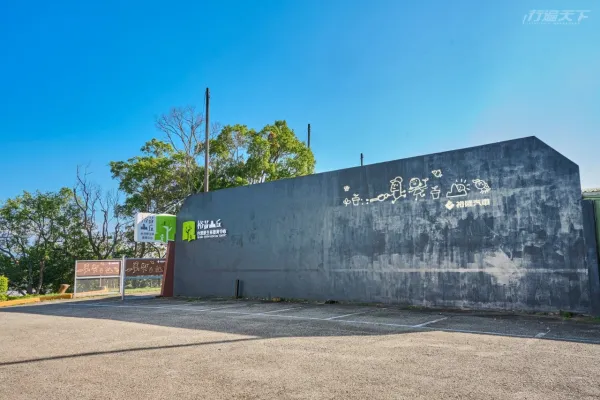
智慧辦公 Turn-Key跨樓層整合、設計施工與智慧門禁系統
因應企業規模擴充進行空間升級。團隊提供空間設計、裝修工程、弱電機電與智慧門禁一站式服務，重新規劃動線與出入管理機制，兼顧日常使用效率、企業形象與管理安全性。
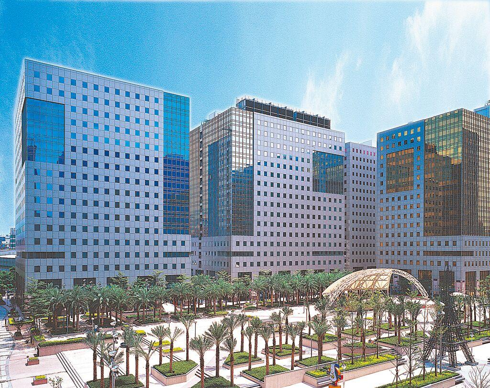
600 人規模 IP-PBX600 人混合辦公通訊升級與手機分機化
面對 600 人混合辦公環境，傳統電話系統難以跨據點支援。導入 IP-PBX 網路總機系統，讓員工手機直接成為行動分機，大幅降低通話與線路維護成本，實現跨區域零距離溝通。
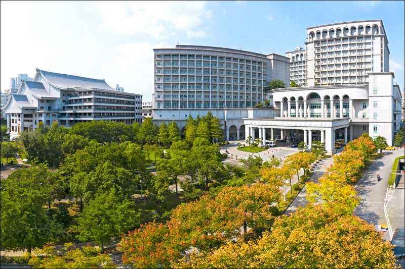
公共運動場域安防大型戶外場域有線＋無線混合安防網
戶外動線複雜且開挖受限。團隊採用彈性傳輸設計，在不破壞環境的前提下建立整合式無線監控與即時求救訊號回傳系統，杜絕安防死角，兼具擴充性與日後維護彈性。
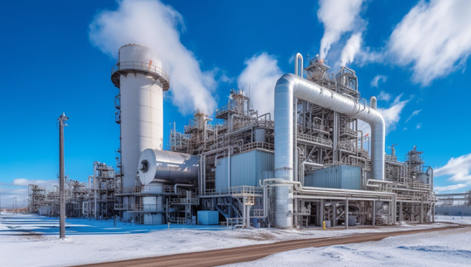
連年評鑑優等三棟透天打通整合的高規格托育空間
以「天空與樹」為主題，整合建築師與消防技師進行嚴謹送審。導入 KT 抗病毒捲毯與高密度底料提升爬行安全，連續多年榮獲社會局優等評價，展現設計、安全與法規並重的專業實力。
6 個月全天候無耗能主動防護技術
打破一般清潔消毒快速失效的缺點，導入長效防護改變接觸表面特性。不只適用醫療院所，更延伸導入高科技廠房、企業辦公室、員工餐廳與托育空間。
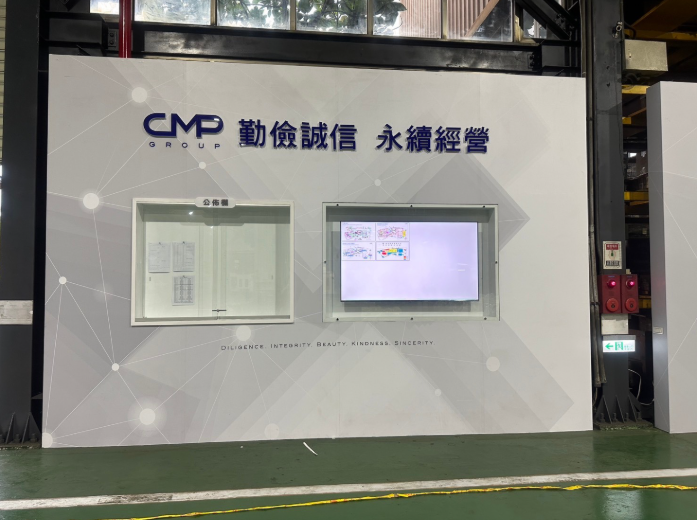
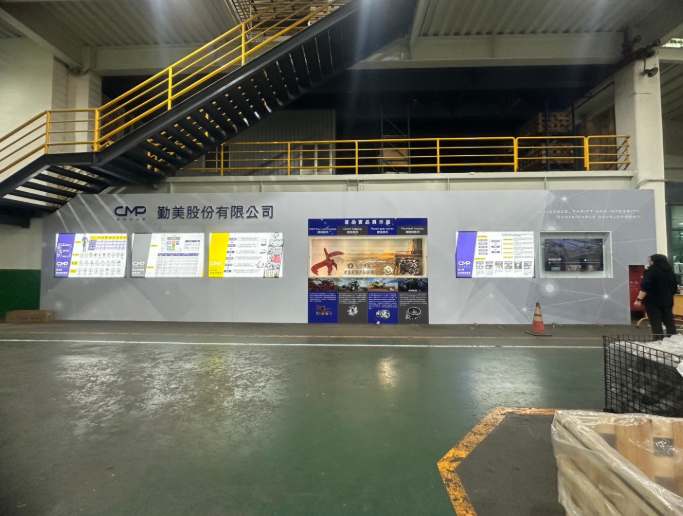
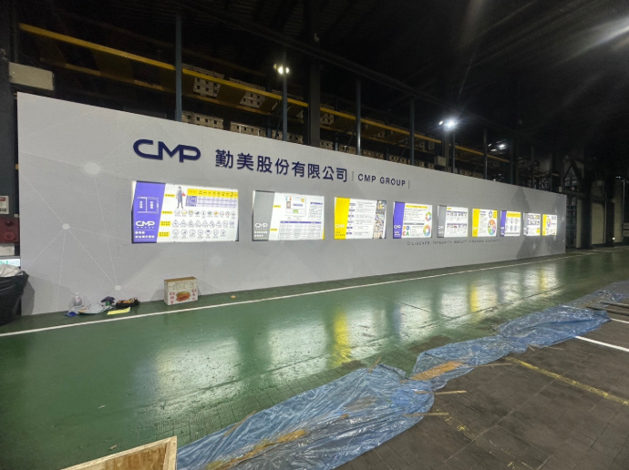
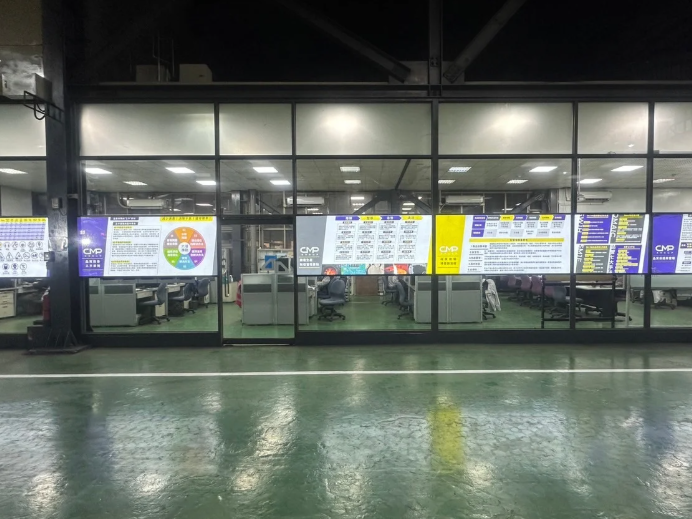
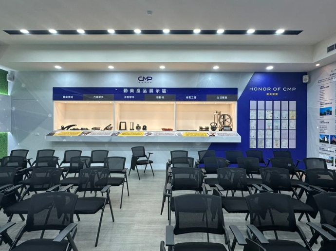
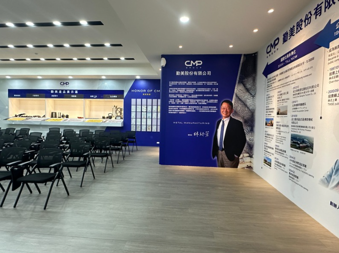
（點擊放大檢視報告）WHAT PROBLEMS CAN WE SOLVE
精準切入中小製造業最棘手的 5 大升級阻礙，提供立竿見影的具體對策。
很多企業不是不想升級，而是擔心一改造就超出預算。我們理解中小企業的成本考量，不硬套昂貴大公司規格，而是依企業現況與預算級距，規劃局部改善、分階段升級或完整重整。
工廠天天涉及生產、出貨、人員動線與設備運轉。我們在規劃期就將營運節奏納入，事前確認哪個時段能動工、哪條產線不能停，分區分段執行，把施工對日常生產的干擾降到最低。
工廠需要產線動線與安全區隔；診所需要管線與醫療流程；辦公室則需兼顧協作、門禁與品牌形象。我們從實際營運出發，整合空間、機電弱電與安防，避免做出「好看卻不好用」的空間。
工廠空間改造牽涉廠登、建築用途、消防、施工許可與現場驗收等複雜規範。我們協助企業在規劃初期就盤點相關流程，事前備齊法規文件，避免事後卡關、補件或面臨罰則。
空間改造不只看外觀，更關乎生命安全與法規合規。從隔間耐燃、逃生動線，到健康建材防護（除甲醛、抗病毒），每一個環節都嚴格把關，確保日後長久安心使用且順利通過主管機關驗收。
歡迎與建多室廣專家團隊預約初步評估，為您的空間注入全新競爭力。
WHY CHOOSE US?
四大堅定承諾，消除您對工期延誤、預算失控與廠商互踢皮球的所有顧慮。
施工計畫全力配合你的生產節奏規劃，哪個時段可以動工、哪條產線不能停，事前全部確認。改造不該成為麻煩，而是你排好了才開始。
從 50 萬到 1,000 萬，不同規模都有對應方案。報價前充分溝通、合約明定範圍，施工若有變動一定事前告知，絕不讓你事後看見意外帳單。
空間設計、設備系統、健康建材、法規申請、補助資源——五個層面同步處理，一個團隊負責到底。不用自己協調五家廠商，只要一個窗口。
設備建置完成後，不論幾個廠區，都可以透過集中系統統一管理——監控畫面、門禁紀錄、電話系統，不用跑現場也能一手掌握，出差照樣管得到。
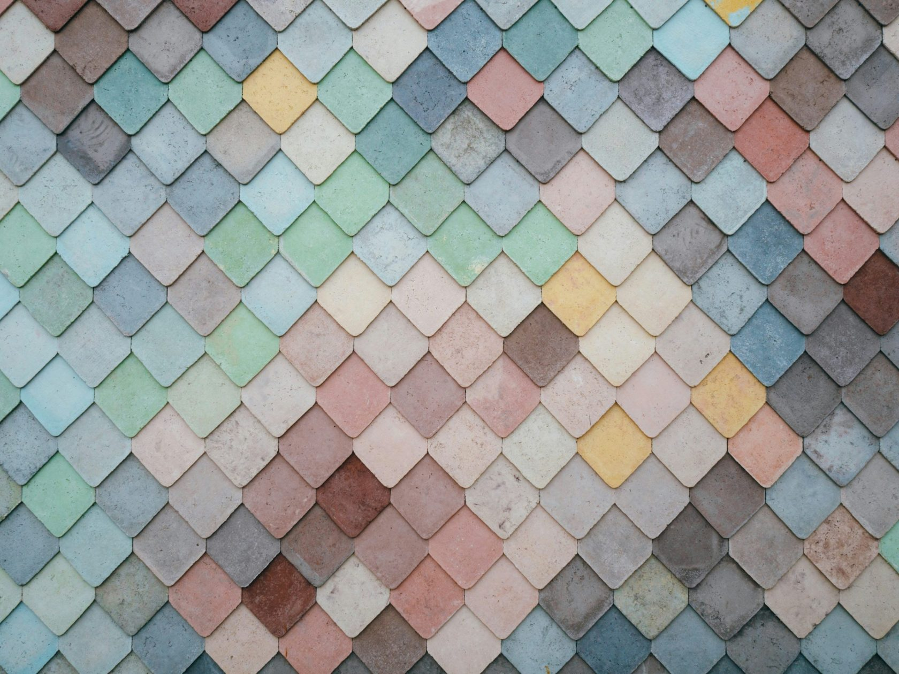
未來十年，台灣製造業正在面臨一場靜默的轉型。
不是產線，不是技術，而是環境。
那些願意把廠房升級的企業，正在用空間向客戶說「我們是認真的」，向員工說「你值得更好的」，向市場說「我們準備好了」。
建多室廣的使命，是讓更多中小企業，用對的方式、對的預算，完成這一步。
企業的故事，我們來幫你說。
CONTACT US
不論您是需要規劃完整廠房升級、辦公室跨區門禁整合、健康無毒抗病毒地材導入，或是準備進行 ESG 評鑑展示空間規劃，建多室廣團隊隨時為您提供最專業的現場勘估與預算建議。
請填寫以下資訊，我們會依照您的時程配合聯絡。